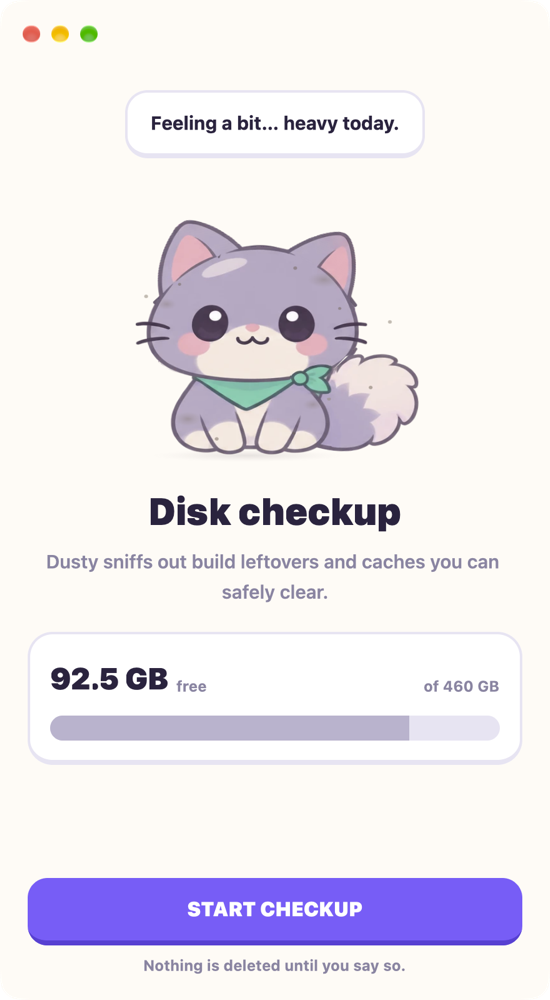
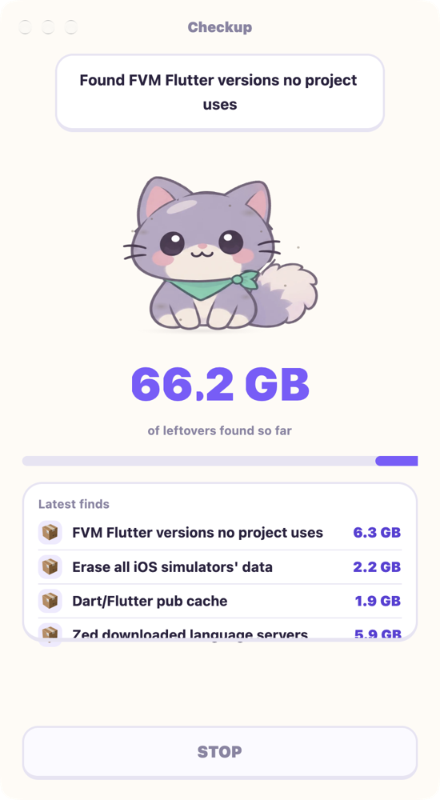
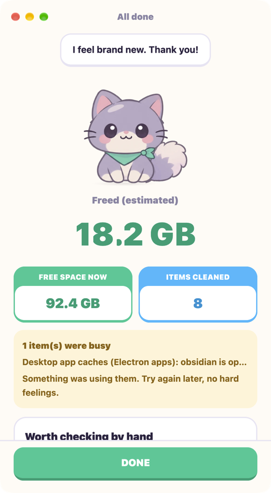

Build folders
Flutter build/, Gradle .gradle/, Rust target/, SwiftPM .build/, .next, dist, __pycache__, CMake, Zig.
A small cat that sniffs out build folders, dev caches and app junk, then clears them without touching anything you'd have to download again.
Apple silicon and Intel. Prefer a terminal? There's a dusty CLI too.

One real developer Mac, first checkup. 18.2 GB could go right away, no re-downloads needed.
One checkup, one tap. Want control? Choose items one by one, or flip on a practice run that deletes nothing.

Dusty walks your projects and caches and reports what it finds as it goes.

The safe picks are already selected. Review them, or open Choose items.

Dusty munches each item and tells you how much room you got back.
A cleaner you can't trust is worse than a full disk. These checks run before anything is deleted.
pubspec.yaml, Cargo.toml…) and git says the folder is ignored..ssh.The same engine and the same rules, as a CLI. Run it on a schedule and your disk stays tidy.
# from a clone of the repo $ npm install && npm run build && npm link $ dusty scan # report only $ dusty # pick, confirm, clean $ dusty --dry-run --yes # what a clean would remove $ dusty -k 3 # spare projects touched in 3 days
Free and open source, for Apple silicon and Intel Macs.
Download for MacmacOS 13 or later · MIT license · no account, no tracking